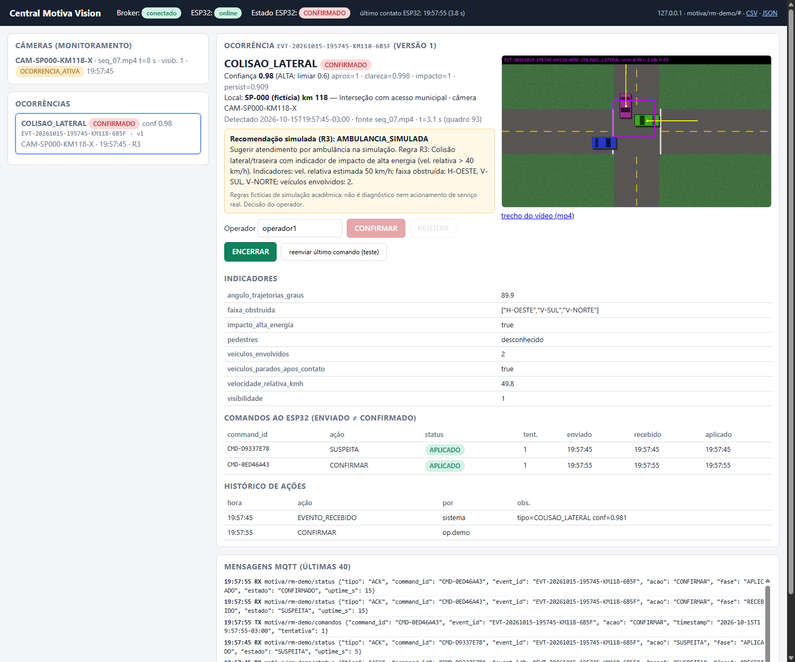
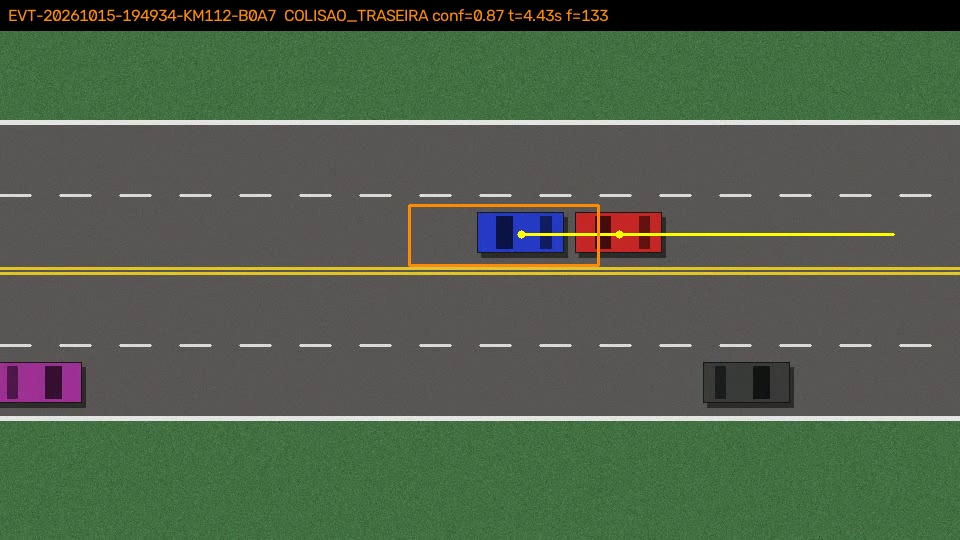
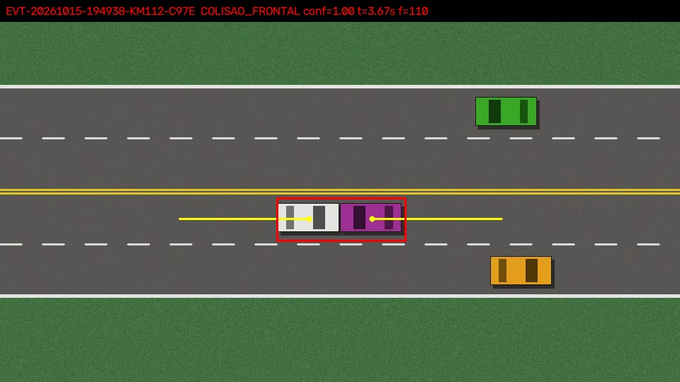
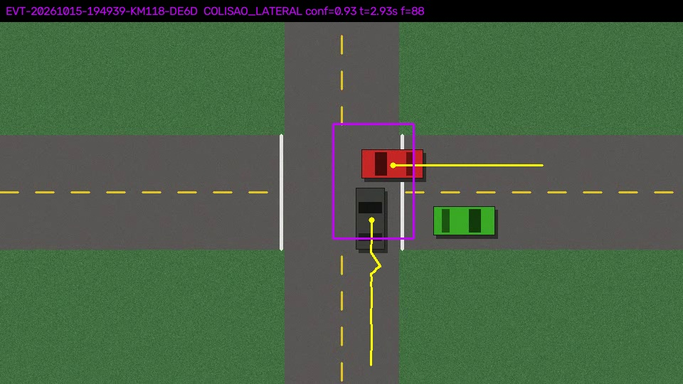
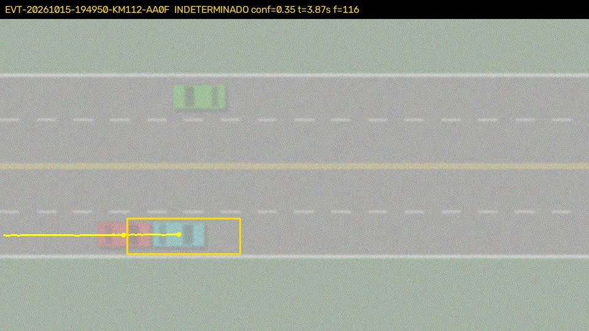
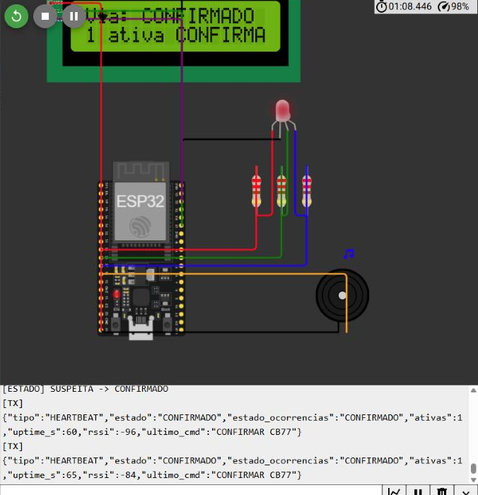
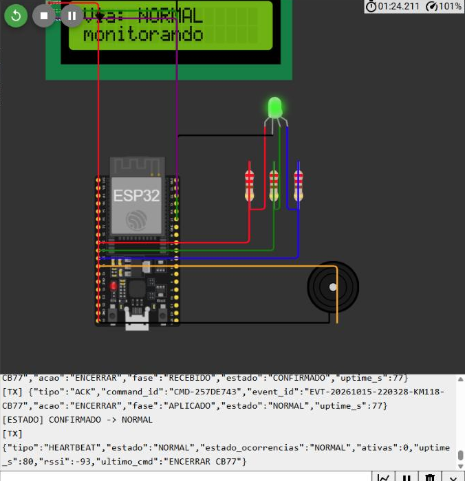

| Integrante | RM | Turma |
|---|---|---|
| Filippo Picino Mendez (responsável pela entrega) | RM565994 | 2CCPX |
| Pedro Henrique Souza Barreto | RM564437 | |
| Gustavo Henrique Rodovalho Silva | RM563695 | |
| Gabriel do Vale Vergueiro | RM564439 | |
| Isabella Piñeiro Santana | RM562779 | |
| Pam Mitchell Barbosa Durham | RM562635 |
| Repositório (código completo) | https://github.com/Filippohh/motiva-vision-cp3 |
| Projeto Wokwi (ESP32) | https://wokwi.com/projects/477997464824978433 |
| Vídeo de demonstração (opcional) | não incluído (item opcional) |
| Evidências no repositório | results/avaliacao.json, results/evidencias_avaliacao/, results/integracao/ (teste automatizado: logs MQTT, export CSV/JSON da central) e results/wokwi/ (execução com o ESP32 no Wokwi + broker HiveMQ) |
O protótipo implementa a cadeia completa pedida na proposta. Um vídeo de uma câmera fictícia é analisado localmente em Python/OpenCV. Quando surge um possível acidente, a visão publica um evento JSON estruturado no MQTT. A central operacional (Flask + SQLite) mostra o evento com evidência, confiança e recomendação simulada. O operador decide CONFIRMAR, REJEITAR ou ENCERRAR. O ESP32 sinaliza a via com LED RGB, buzzer e LCD e devolve à central a confirmação de recebimento e de aplicação de cada comando.
| Camada | Implementação | Arquivos |
|---|---|---|
| Aquisição | Arquivo de vídeo (ou webcam via OpenCV) associado a um camera_id com rodovia, km e trecho fictícios, faixas e escala (m/pixel). | config/cameras.json, dataset/manifest.json |
| Visão computacional | Subtração de fundo, rastreamento multiobjeto, análise temporal do par de veículos em contato, classificação por geometria das trajetórias, índice de visibilidade, confiança e limiar, controle de ocorrência (event_id único). | vision/pipeline.py, vision/run_vision.py |
| Comunicação | MQTT (paho-mqtt / PubSubClient), JSON motiva.evento.v1, tópicos próprios por RM. | config/settings.py, common/mqtt.py |
| Central | Painel web, histórico em SQLite, matriz de recomendação, CONFIRMAR/REJEITAR/ENCERRAR, rastreio de comando enviado/recebido/aplicado, retransmissão, exportação CSV/JSON. | central/app.py, central/templates/index.html, common/recommendation.py |
| Infraestrutura | ESP32 com 4 estados obrigatórios, ACKs, heartbeat, LWT, proteção contra duplicatas e reconexão não bloqueante com millis(). | esp32/sketch.ino, esp32/diagram.json |
| Componente | Ligação no ESP32 DevKit-C v4 | Função |
|---|---|---|
| LED RGB (catodo comum) + 3 resistores de 220 Ω | R → GPIO25, G → GPIO26, B → GPIO27, COM → GND | Cor e ritmo do estado |
| Buzzer | GPIO14 / GND | Bipes duplos no estado CONFIRMADO |
| LCD 16x2 I2C (0x27) | SDA → GPIO21, SCL → GPIO22, VCC → 5 V, GND | Estado da via, ocorrências ativas, último comando ou motivo da falha |
| Estado | Sinalização | Quando |
|---|---|---|
| NORMAL | verde fixo; LCD "monitorando" | conectado, central viva e nenhuma ocorrência ativa |
| SUSPEITA | amarelo piscando a 1 Hz, sem som (sinal preliminar) | comando SUSPEITA recebido; aguardando avaliação humana |
| CONFIRMADO | vermelho piscando a 4 Hz + 2 bipes a cada 2 s | operador confirmou |
| FALHA | roxo com 2 flashes a cada 1,5 s; LCD mostra o motivo | sem broker, ou sem nenhuma mensagem da central (PING a cada 5 s) há mais de 15 s |
A sinalização preliminar (amarelo, sem som) é claramente diferente da confirmada (vermelho rápido com buzzer). O loop() não bloqueia: os padrões de LED e buzzer são calculados com millis(), a reconexão Wi-Fi/MQTT é tentada a cada 3 s com setSocketTimeout(2) e o LCD só é reescrito quando muda. O estado FALHA tem prioridade de exibição, mas as ocorrências continuam guardadas. Quando a comunicação volta, o ESP32 retorna ao estado real (por exemplo, CONFIRMADO).
Encerramento: REJEITAR ou ENCERRAR removem a ocorrência da lista ativa e gravam o event_id num anel de "fechados". Sem outras ocorrências ativas, o ESP32 volta a NORMAL. Duplicatas: o firmware guarda os últimos 32 command_id aplicados. Um comando repetido recebe ACK DUPLICADO e não atua de novo. SUSPEITA ou CONFIRMAR para um evento fechado recebe IGNORADO_ENCERRADO e não reabre o evento.
| Saída | Critério observável (vista superior, câmera fixa) |
|---|---|
| COLISAO_TRASEIRA | Contato entre dois veículos cujas trajetórias antes do impacto têm ângulo próximo de 0° (mesmo sentido), seguido de parada brusca. Também vale para veículo móvel atingindo um veículo parado alinhado ao seu eixo. |
| COLISAO_FRONTAL | Contato com trajetórias opostas (ângulo próximo de 180°) e parada brusca. |
| COLISAO_LATERAL | Contato com trajetórias aproximadamente perpendiculares (próximo de 90°), ou veículo móvel atingindo perpendicularmente o eixo de um veículo parado. |
| SEM_ACIDENTE | Nenhum candidato com evidência mínima. Publicado periodicamente em motiva/rm565994/visao como estado de monitoramento da câmera. |
| INDETERMINADO | Evidência acima do mínimo, mas confiança abaixo do limiar, ângulo ambíguo ou visibilidade insuficiente. Também é emitido quando a visibilidade fica ruim por 2 s seguidos: a câmera "não consegue ver" e pede revisão humana. |
Limites: capotamento e atropelamento não foram implementados. A câmera precisa ser fixa e a escala (m/px) e as faixas são configuradas por câmera. Com o veículo atingido parado, o sistema não sabe qual extremidade é a traseira; uma frontal contra veículo parado é classificada como traseira, com clareza reduzida em 20%. Colisões em ângulo intermediário (≈45° ou ≈135°) têm clareza baixa e tendem a INDETERMINADO. Envolvimento de 3 ou mais veículos é agregado na mesma ocorrência, mas a contagem continua sendo do par inicial. Nenhuma lesão ou gravidade é inferida.
aprox: velocidade de fechamento entre os veículos nos 6 quadros anteriores ao contato (4 px/quadro = 1);impacto: queda absoluta de velocidade entre os 6 quadros antes e os quadros +10 a +20 após o contato (4 px/quadro = 1). Uma frenagem normal reduz a velocidade antes de os veículos se aproximarem, então esse termo fica baixo;persist: fração dos quadros +10 a +20 com os dois veículos praticamente parados (< 1 px/quadro);clareza: quão perto o ângulo entre as velocidades pré-impacto está do protótipo da categoria (0°, 90° ou 180°); vale 0 a 45° do protótipo.versao incrementada.| Condição | Saída |
|---|---|
| base < 0,35 | candidato descartado (SEM_ACIDENTE), mas registrado no log de candidatos |
| qvisib < 0,45, ou confiança < 0,60, ou ângulo indefinido | INDETERMINADO, regra R1 (revisão humana sem concluir tipo ou gravidade) |
| confiança ≥ 0,60 | categoria; nível MÉDIA (0,60 a 0,80) ou ALTA (≥ 0,80) |
| qvisib < 0,45 por 60 quadros | alerta INDETERMINADO de visibilidade (motivo visibilidade_insuficiente) |
Os pesos, os limiares e as referências de contraste (30 para a pista dupla e 10,5 para a interseção, que tem menos bordas) foram ajustados somente com os 6 vídeos do conjunto de ajuste. A confiança é um escore heurístico de evidência, não uma probabilidade calibrada.
Avaliada em ordem; vale a primeira regra que casar. Ela combina o tipo de acidente com indicadores visíveis (veículos envolvidos, velocidade relativa e faixa obstruída). Regras fictícias, sem caráter de protocolo médico.
| Regra | Condição simulada | Recurso sugerido |
|---|---|---|
| R1 | INDETERMINADO ou confiança < 0,60 | REVISAO_OPERADOR: revisão sem concluir tipo ou gravidade |
| R2 | Colisão frontal, ou 3+ veículos envolvidos | AVALIACAO_PRIORITARIA_RESGATE: avaliação prioritária + recurso adicional de resgate |
| R3 | Lateral ou traseira com alta energia (velocidade relativa > 40 km/h) | AMBULANCIA_SIMULADA |
| R4 | Lateral ou traseira sem alta energia, com faixa obstruída | EQUIPE_OPERACIONAL_E_SINALIZACAO (equipe + sinalização/guincho) |
| R5 | Evento confirmado sem sinais adicionais | EQUIPE_OPERACIONAL |
A justificativa enviada no evento e exibida na central cita a regra aplicada e os valores dos indicadores, por exemplo: "Regra R3: … Indicadores: vel. relativa estimada 50 km/h; faixa obstruída: H-OESTE…; veículos envolvidos: 2."
| Tópico | Sentido | QoS | Retida | Mensagens |
|---|---|---|---|---|
motiva/rm565994/eventos | visão → central | 1 | não | evento motiva.evento.v1 (abaixo) |
motiva/rm565994/visao | visão → central | 0 | não | a cada 2 s de vídeo: {camera_id, fonte, tempo_video_s, visibilidade, saida: SEM_ACIDENTE|OCORRENCIA_ATIVA} |
motiva/rm565994/comandos | central → ESP32 | 1 | não | {command_id, event_id, acao: SUSPEITA|CONFIRMAR|REJEITAR|ENCERRAR, timestamp, tentativa} e {acao: PING} a cada 5 s |
motiva/rm565994/status | ESP32 → central | 0 | ONLINE e LWT: sim | ACK {command_id, event_id, acao, fase: RECEBIDO|APLICADO|DUPLICADO|IGNORADO_ENCERRADO, estado}, HEARTBEAT {estado, ativas, uptime_s, rssi} a cada 5 s, ONLINE e LWT {tipo: LWT, online: false} |
QoS e retenção: eventos e comandos usam QoS 1 (pelo menos uma entrega). Duplicatas são esperadas e tratadas por id. Eventos e comandos não são retidos, para que um cliente reconectado não receba de novo uma ocorrência antiga. Só a presença do ESP32 (ONLINE/LWT) é retida. O PubSubClient publica apenas em QoS 0, então a confiabilidade ESP32 → central vem do ACK de aplicação: a central retransmite o mesmo command_id a cada 6 s, até 3 vezes, e depois marca SEM_CONFIRMACAO.
Duplicatas: (1) a visão emite um event_id por ocorrência e republica apenas como nova versao; (2) a central faz upsert por event_id e ignora versões menores ou iguais à armazenada (registra DUPLICATA_IGNORADA); (3) o ESP32 ignora command_id repetido e não reabre eventos encerrados.
Unidades e formatos: timestamp em ISO-8601 com fuso −03:00 (America/Sao_Paulo); confiança de 0 a 1 (3 casas); velocidade em km/h (estimada pela escala da câmera); tempo_video_s em segundos; frame = índice do quadro do contato; ângulo em graus de 0 a 180; visibilidade de 0 a 1; campos sem observação possível valem "desconhecido". Credenciais: lidas de .env (fora do Git, ver .env.example). O broker público usa só identificadores de teste e dados fictícios, sem imagens.
{
"schema": "motiva.evento.v1", "event_id": "EVT-20261015-195745-KM118-6B5F", "versao": 1,
"timestamp": "2026-10-15T19:57:45-03:00",
"camera_id": "CAM-SP000-KM118-X",
"local": {"rodovia": "SP-000 (fictícia)", "km": 118.0, "trecho": "Interseção com acesso municipal", "municipio": "Cidade Exemplo/SP"},
"tipo": "COLISAO_LATERAL",
"confianca": {"valor": 0.981, "nivel": "ALTA", "limiar": 0.6,
"componentes": {"aprox": 1.0, "impacto": 1.0, "persist": 0.909, "clareza": 0.998}, "definicao": "..."},
"indicadores": {"veiculos_envolvidos": 2, "faixa_obstruida": ["H-OESTE", "V-SUL", "V-NORTE"],
"velocidade_relativa_kmh": 49.8, "impacto_alta_energia": true, "veiculos_parados_apos_contato": true,
"angulo_trajetorias_graus": 89.9, "pedestres": "desconhecido", "visibilidade": 1.0},
"recomendacao": {"regra": "R3", "recurso": "AMBULANCIA_SIMULADA", "justificativa": "Sugerir atendimento por ambulância na simulação. Regra R3: ..."},
"estado": "SUSPEITA",
"evidencia": {"fonte": "seq_07.mp4", "frame": 93, "tempo_video_s": 3.1, "frame_decisao": 113,
"imagem": "evidencias/EVT-20261015-195745-KM118-6B5F.jpg", "clip": "evidencias/EVT-20261015-195745-KM118-6B5F.mp4"}
}
Painel web (http://localhost:5000) atualizado a cada 1 s. Mostra: estado da conexão com o broker, ESP32 online/sem contato, estado atual do ESP32 e último contato; câmeras em monitoramento; lista de ocorrências; e, para a ocorrência selecionada, tipo, confiança e componentes, localização, evidência (imagem e clipe), recomendação com justificativa, indicadores, botões CONFIRMAR/REJEITAR/ENCERRAR com o nome do operador, a tabela de comandos com enviado ≠ recebido ≠ aplicado e o histórico de ações com horário e autor. Fluxo: SUSPEITA → CONFIRMADO → ENCERRADO, ou SUSPEITA → REJEITADO; ações fora do fluxo são recusadas (HTTP 409). O histórico fica no SQLite (results/central.db) e sobrevive a atualizar a página ou reiniciar a central. A exportação está em /api/export.csv e /api/export.json (ocorrências, ações, comandos e mensagens MQTT).

Painel durante demonstração: colisão lateral (seq_07) confirmada pelo operador; SUSPEITA e CONFIRMAR aplicados pelo ESP32 (gêmeo), com horários de envio, recebimento e aplicação.
Foram usadas 14 sequências (a proposta pede 12): 7 com acidente (3 traseiras, 2 frontais, 2 laterais), 5 sem acidente (passagem normal com ultrapassagens, frenagem forte com parada, aproximação de veículo parado sem impacto, cruzamento com parada na retenção, tráfego denso com onda de frenagem e variação de luz) e 2 com visibilidade prejudicada (neblina densa e noite, ambas com impacto real). As cenas são simulações visuais coerentes (permitidas pela proposta) geradas por vision/generate_dataset.py. Cada vídeo vem de uma pequena simulação física 2D: a colisão não é desenhada como rótulo, ela acontece quando os retângulos dos veículos se tocam e é resolvida como choque inelástico com atrito e giro. Os nomes dos arquivos são neutros e embaralhados (seq_01 a seq_14). Os rótulos ficam em ground_truth.json, lido apenas pelo avaliador. O detector recebe só os pixels.
Separação: 6 vídeos de ajuste (seq_02, 06, 07, 09, 10, 13) foram os únicos usados para definir pesos, limiares e referências de contraste. Os outros 8 de avaliação (seq_01, 03, 04, 05, 08, 11, 12, 14, mais da metade) só foram processados depois de os parâmetros serem congelados.
python -m vision.evaluate)| Vídeo | Conj. | Cenário | Esperado | Obtido | Conf. | Regra | IDs | Evidência (instante) | Resultado |
|---|---|---|---|---|---|---|---|---|---|
| seq_01 | aval. | Traseira, sentido oeste | TRASEIRA | TRASEIRA | 0,872 | R4 | 1 | t=4,43 s, q.133 | acerto |
| seq_02 | ajuste | Frontal com veículo na contramão | FRONTAL | FRONTAL | 1,000 | R2 | 1 | t=3,57 s, q.107 | acerto |
| seq_03 | aval. | Frontal (outra faixa/velocidades) | FRONTAL | FRONTAL | 1,000 | R2 | 1 | t=3,67 s, q.110 | acerto |
| seq_04 | aval. | Lateral vindo do sul | LATERAL | LATERAL* | 0,935 | R3 | 1 | t=2,93 s, q.88 | acerto* |
| seq_05 | aval. | Tráfego denso + variação de luz | SEM ACID. | SEM ACID. | - | - | 0 | - | acerto |
| seq_06 | ajuste | Traseira em pista livre | TRASEIRA | TRASEIRA | 0,903 | R4 | 1 | t=4,00 s, q.120 | acerto |
| seq_07 | ajuste | Lateral (T-bone) na interseção | LATERAL | LATERAL | 0,981 | R3 | 1 | t=3,10 s, q.93 | acerto |
| seq_08 | aval. | Cruzamento com parada na retenção | SEM ACID. | SEM ACID. | - | - | 0 | - | acerto |
| seq_09 | ajuste | Passagem normal com ultrapassagens | SEM ACID. | SEM ACID. | - | - | 0 | - | acerto |
| seq_10 | ajuste | Neblina densa (há impacto traseiro) | INDETERM. | INDETERM. | 0,349 | R1 | 1 | t=3,87 s, q.116 | acerto |
| seq_11 | aval. | Noite (há impacto lateral) | INDETERM. | INDETERM.** | 0,000 | R1 | 1 | t=2,37 s, q.71 | acerto** |
| seq_12 | aval. | Traseira, faixa da esquerda | TRASEIRA | TRASEIRA | 0,891 | R4 | 1 | t=4,30 s, q.129 | acerto |
| seq_13 | ajuste | Frenagem forte e parada sem contato | SEM ACID. | SEM ACID. | - | - | 0 | - | acerto |
| seq_14 | aval. | Aproximação de veículo parado sem impacto | SEM ACID. | SEM ACID. | - | - | 0 | - | acerto |
* Na 1ª execução da avaliação, seq_04 saiu INDETERMINADO (ver 9.5). O resultado acima é da 2ª execução, após a correção de um defeito de lógica, sem mudança de pesos ou limiares. As duas execuções estão salvas (results/avaliacao_execucao1.json e results/avaliacao.json).
** Na noite, o detector não chegou a rastrear os veículos. A saída INDETERMINADO veio do alerta de visibilidade, não da análise do impacto.
| Métrica (14 vídeos) | 1ª execução | Final |
|---|---|---|
| Alerta quando há impacto (VP / FN), incluindo os 2 com visibilidade ruim | 9 / 0 | 9 / 0 |
| Falso positivo em vídeo sem acidente (FP / VN) | 0 / 5 | 0 / 5 |
| Precisão / recall de detecção | 1,00 / 1,00 | 1,00 / 1,00 |
| Acurácia de classificação nas 7 colisões | 6/7 (0,857) | 7/7 (1,00) |
| Vídeos com mais de um event_id (duplicata) | 0 | 0 |
| Latência média contato → evento (tempo de vídeo) | 0,60 s | 0,60 s |
| Tempo de processamento | ≈ 1,5 a 2,6 s por vídeo de 8 a 9 s (≈ 150 quadros/s, 960×540, CPU) | |




python -m tools.integration_test): 18/18 verificaçõesExecutado com broker local (amqtt), central real e o gêmeo Python do firmware (tools/esp32_sim.py, mesma máquina de estados do sketch.ino). O broker foi derrubado e religado de verdade durante o teste. Logs e exportação estão em results/integracao/.
| Teste da proposta | Verificação | Evidência registrada | |
|---|---|---|---|
| Integração completa | vídeo seq_06 → evento na central → SUSPEITA aplicado no ESP32 | EVT-…-E638 COLISAO_TRASEIRA; CMD-24F5A582 APLICADO | OK |
| Confirmação e rejeição | CONFIRMAR → ESP32 CONFIRMADO; horários enviado/recebido/aplicado gravados | CMD-87032D5B | OK |
| Confirmação e rejeição | seq_02 (frontal) REJEITAR → ESP32 volta a NORMAL | EVT-…-1789 REJEITADO | OK |
| Encerramento | ENCERRAR → ESP32 NORMAL; ocorrência ENCERRADO | histórico de ações | OK |
| Comando duplicado | reenvio do mesmo command_id → ACK DUPLICADO, sem nova atuação | ESP32_DUPLICATA_DESCARTADA | OK |
| Comando duplicado | novo comando SUSPEITA para evento encerrado não reabre | ESP32 permanece NORMAL | OK |
| Duplicata de evento | mesmo event_id/versão republicado → 1 ocorrência | DUPLICATA_IGNORADA | OK |
| Trânsito sem acidente | seq_13 (frenagem/parada) não cria ocorrência | saída SEM_ACIDENTE | OK |
| Ocorrência persistente / visibilidade | neblina: alerta + contato = 2 publicações com 1 event_id; INDETERMINADO/R1 | versão 2 na central | OK |
| Broker indisponível | broker parado → ESP32 FALHA e central "desconectado"; broker religado → reconexão sem reiniciar | recuperação em 2,1 s | OK |
| Heartbeat / dados desatualizados | central parada → ESP32 FALHA (sem PING > 15 s); central de volta → NORMAL | FALHA após 9,9 s sem a central (último PING ≈ 5 s antes) | OK |
| Histórico | central reiniciada mantém o histórico (SQLite) | 3 ocorrências preservadas | OK |
No mesmo teste, o comando REJEITAR do evento de neblina foi enviado logo antes de o broker ser derrubado. A central retransmitiu (tentativa 2) e o ESP32 respondeu DUPLICADO, sem atuar de novo. Esse é o mecanismo de retransmissão funcionando num caso real.
Cadeia completa executada em 15/10/2026 com o firmware real no Wokwi (projeto), a central em localhost:5000 e a visão publicando em motiva/rm565994/eventos no broker.hivemq.com. Exportação completa em results/wokwi/export_central_wokwi.json e .csv.
| Passo | Resultado observado | |
|---|---|---|
| Boot do ESP32 | Wi-Fi Wokwi-GUEST, conexão MQTT, LCD "Via: NORMAL / monitorando", LED verde, HEARTBEAT a cada 5 s visto pela central (ESP32 online) | OK |
| seq_07 (lateral) → visão → central | EVT-20261015-220328-KM118-CB77, COLISAO_LATERAL, conf. 0,98, R3; SUSPEITA enviado 22:03:28, recebido 22:03:29, aplicado 22:03:30; LED amarelo piscando | OK |
| CONFIRMAR (operador) | CMD-E3685978 enviado/recebido/aplicado entre 22:04:02 e 22:04:03; LED vermelho + buzzer; LCD "CONFIRMADO" | OK |
| Reenvio do mesmo command_id | ACK DUPLICADO, sem nova atuação (ESP32_DUPLICATA_DESCARTADA) | OK |
| ENCERRAR | CMD-257DE743 aplicado; ESP32 volta a NORMAL | OK |
| Central parada (sem PING) | ESP32 entra em FALHA ("central muda", roxo); ao religar a central, volta a NORMAL em ≈ 7 s; histórico preservado | OK |
| seq_03 (frontal) + REJEITAR | EVT-…-7A6A COLISAO_FRONTAL, R2; REJEITAR aplicado; ESP32 NORMAL | OK |
| seq_14 (sem acidente) | nenhuma ocorrência criada | OK |
| Broker indisponível | não reproduzível no broker público (não é possível desligá-lo); validado com broker local e o gêmeo do firmware (9.3) | parcial |


command_id corrompido, e a central marcou o SUSPEITA como SEM_CONFIRMACAO após 3 tentativas (evento EVT-…-1D40, preservado no histórico). Causa: o ArduinoJson, no modo zero-copy, aponta as strings para dentro do buffer do PubSubClient, e o publish() do primeiro ACK sobrescreve esse buffer. O gêmeo em Python não reproduz esse comportamento de memória. Correção: copiar acao, command_id e event_id para arrays locais antes de publicar (commit 3fbcafe). Com o firmware corrigido, todos os comandos foram aplicados na 1ª tentativa.impacto, que exige queda brusca de velocidade depois do contato, é o que protege contra o caso clássico "duas caixas encostadas".Todo o conteúdo usa dados fictícios. Nenhuma imagem de pessoas ou informação pessoal foi transmitida pelo broker público.